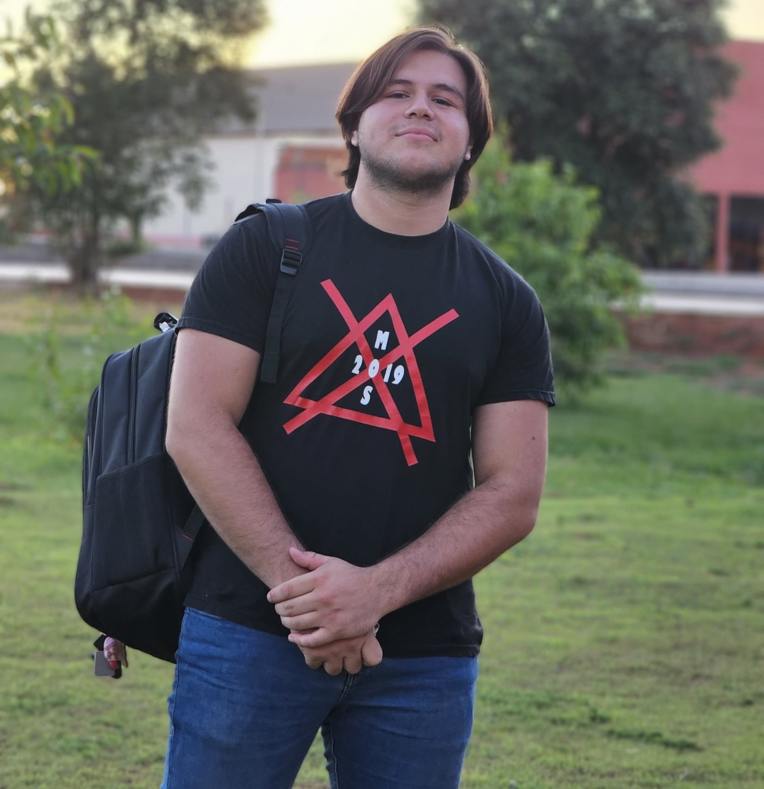

Manuel López
Tecnico en informática
- Año 19
- Dirección Curuguaty - Paraguay
- E-mail Lopeztobi65@gmail.com
- Telefono +595 986-767-459
Estudie en en el colegio Gral José Gervasio Artigas en en bachillerato Tecnico en Informática,y actualmente estoy estudiando en la universidad nacional de canindeyu,lo cual mi carrera seria de Analisis de Sistemas.
Experiencia Laboral
1. Caza y Pesca Curuguaty
Vendedor de cartuchos, municiones y artículos de pesca
Fecha: Actualmente
- Atención personalizada a los clientes.
- Venta y asesoramiento sobre municiones y artículos de pesca.
- Control de stock y reposición de productos.
- Manejo básico de caja y cobros.
2. San Blas Distribuciones
Facturador y asistente logístico
Fecha: 1 año (hasta septiembre)
- Facturación y control de emisión y registro de facturas para la distribución de productos.
- Gestión de productos: preparación y organización de pedidos de cervezas y otros artículos.
- Logística de carga: carga y despacho de productos en camiones para su entrega en distintos puntos de distribución.
- La empresa cerró sus operaciones en septiembre tras entrar en quiebra.
Soy Tobias Lopez, técnico en informática formado en el colegio, con una gran pasión por la tecnología, la música y las buenas conversaciones. Actualmente vivo con mis padres en Curuguaty y me considero una persona sociable por naturaleza. Tengo facilidad para caer bien a los demás gracias a mi carisma y sé captar la atención de quienes me rodean, especialmente al explicar o compartir algo.
En mi tiempo libre disfruto tocar la guitarra, jugar en consola con mis amigos, salir a compartir, pasar tiempo con gente cercana, tomar gaseosa y comer bocaditos. También participo activamente en mi iglesia. Valoro mucho la amistad, la buena onda y los momentos simples que se disfrutan con los demás.
Me destaco por ser tranquilo, responsable y con una gran capacidad para adaptarme a distintos ambientes. Siempre busco aprender, crecer y generar un impacto positivo donde me toque estar.
.png)
.png)
.png)
.png)
Referencia Personal
Ing. Noelia Caceres
Cel. +595 973 226630
Jefe de ventas. Wildson Gayoso
Cel. +595 983 137570
Ing. Amancio Báez Pavón
Cel. +595 985 895188